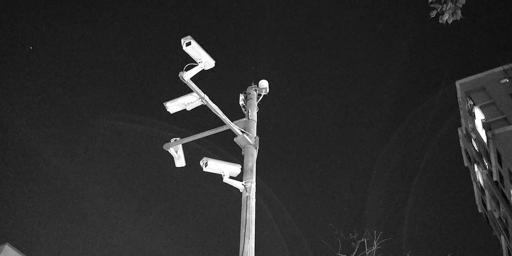

01 · SEE
Vision that holds up in a real room
Detection, tracking and re-identification under bad angles, fisheye distortion and people who walk behind each other. 95% mAP at 25 FPS on one GPU, not a benchmark rig.
[ LE NGUYEN THANH HA · AI PRODUCT ENGINEER ]
Point a camera at a real business problem and I turn it into software that earns its cost back: the model, the backend, the infrastructure, and the screen a manager actually opens.
[ WHAT THE SOFTWARE SEES ]
This is the input, not a rendering of one. A shelf-scoring model reads this frame as rows, facings and the gaps between them, then turns that into a compliance score a field auditor used to produce by hand. The boxes above are drawn by hand to show the vocabulary. The live systems that produce them run behind client NDAs, which is why the diagrams further down describe mechanisms rather than replay footage.
[ WHAT I ACTUALLY DO ]
Detection, tracking and re-identification under bad angles, fisheye distortion and people who walk behind each other. 95% mAP at 25 FPS on one GPU, not a benchmark rig.
Vision-language models and LLM agents that score a dish, flag a shelf, or answer a manager's question in plain language, with guardrails, so the answer can be argued with rather than merely trusted.
Microservices, auth, role-based access, CI/CD with rollback, four-language interfaces, and documentation the client can run without me in the room.
A model that is right in a notebook and wrong at 12:40 on a Friday has not been built yet. Every system below was tuned against the hour it actually runs in: occlusion, steam, bad angles, staff moving faster than the frame rate.
[ SELECTED WORK · FIELD LOG ]
Twelve in all: four at DFlo, one at Viettel Solutions, one at Rainscales, six delivered solo for SMEs. The four below each carry a number you can check or a repository you can open.
I found the opportunity, wrote the business case, then built and released it: computer vision that scores market photographs automatically and retires manual field-audit review.
Six services behind one gateway: live table occupancy, movement heatmaps, automated food quality control, and a chat agent answering operations questions from history. Primary author.
Two classes — customer and staff — detected under camera placements that had defeated earlier attempts, plus gesture recognition so floor staff are sent to guests raising a hand.
Training-stability work and multi-GPU support on a widely used image-generation project; plus a VRAM calculator for language-model workloads and a chess engine from first principles.
Also shipped
Every dish counted by category as it travels the belt, across two cameras, with belt-number OCR and a live dashboard for store managers. Live in a national restaurant chain.
Messy client workbooks reconciled into structured tables; the system proposes, a human confirms. 101 findings from security review closed across three releases.
One system across an appliance-repair chain, replacing spreadsheets. Branch-level data separation enforced inside the access token; 21 business resources live.

The part nobody photographs
Cameras are cheap.[ HOW I WORK ]
The job is building something that can be audited.
Nothing the system infers is treated as fact until a person confirms it.
Dead-letter queues and diagnosable errors. A failed evaluation is always visible and recoverable.
Accuracy checks that skip rather than pass when real validation data is missing. False assurance is worse than none.
Separation enforced in the token, least-privilege responses, permissions on the actions that matter.
Continuous delivery with automatic rollback, and runbooks so nothing depends on one person being reachable.
Architecture and operating documentation written alongside the code, not after it.
[ WHAT I BUILD WITH ]
Everything below is in a system that shipped, not on a course certificate.
[ TRACK RECORD ]
Primary author of Sauron. Also delivered conveyor-belt dish counting for Golden Gate, a video-intelligence platform handling 24h+ libraries, and meeting intelligence deployed to Azure with infrastructure-as-code.
Six production business systems delivered solo for Vietnamese SMEs: requirements through security review to deployment and handover, for clients with no in-house IT.
Casino floor detection and gesture recognition; warehouse layout rules for Linfox derived from depth estimation.
TesselAI from internal proposal to a commercial product in production, and a ~3× inference throughput gain on unchanged hardware.
[ GET IN TOUCH ]
Three ways to work with me: a full-time role, a fixed-scope project contract delivered in phases with sign-off gates, or an embedded technical lead for your own team. Hanoi relocation or remote.
Twelve production systems, six of them delivered alone from requirements to handover, the rest as primary author inside a team. I would rather show you a repository than a portfolio. Ask, and I will open one.
Vietnamese (native) · English (professional working proficiency). This page is published in four languages for the same reason the products are.
Or reach me directly